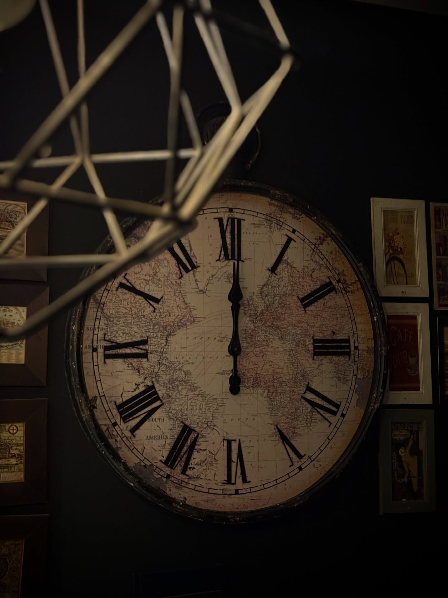
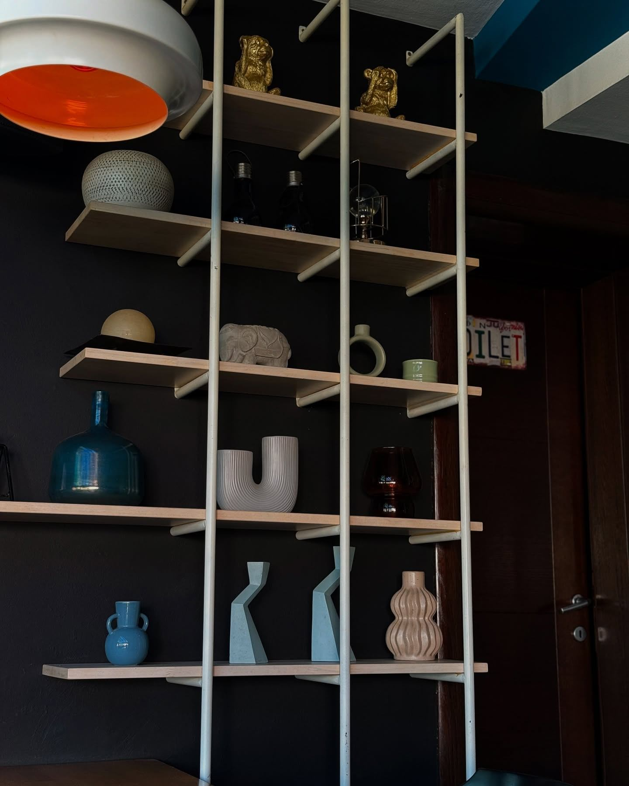

Prva kafa
Mirno jutro i omiljena šoljica — lijep početak dana.
KAFE BAR · GRADIŠKA
Dobra kafa, prijatan ambijent i vrijeme koje na trenutak uspori.
Upoznaj Peticu ↓DOBRO DOŠLI U PETICU
Petica je zamišljena kao mjesto za jutarnju kafu, susret s prijateljima i večernje razgovore. Ušuškan enterijer, pažljivo odabrani detalji i topla atmosfera čine svaki dolazak malim predahom.
Otkrijte ambijent ↗

PROSTOR S KARAKTEROM
Svaki kutak priča svoju priču — od pažljivo složenih detalja do mjesta na kojem kafa najbolje prija.
MALI RITUALI
Mirno jutro i omiljena šoljica — lijep početak dana.
Predah od obaveza uz prijatan razgovor i poznatu atmosferu.
Toplo svjetlo, dobra ekipa i veče bez žurbe.
KADROVI IZ PETICE
Dodirnite fotografiju
za veći prikaz ↘
SVRATITE DO NAS
Caffe Petica — mjesto za kafu i druženje u Gradišci.
Gradiška, Bosna i Hercegovina
[Dopuniti tačnu adresu][Dopuniti broj telefona]
Za rezervacije i informacije[Dopuniti radno vrijeme]
Provjeriti prije objave